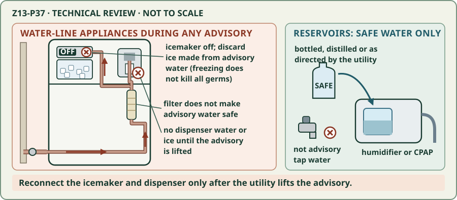

Z13-P37 · Home survival and utilities · New manuscript
Isolate icemakers, humidifiers, and point-of-use filters during water advisories
Prevent contaminated advisory water from silently seeding refrigerator ice bins, appliance filters, and misting air into bedrooms.
When it applies · Any household experiencing a municipal Boil Water, Do Not Drink, or Do Not Use notice or private well pressure loss.
Equipment · Refrigerator icemaker shutoff arm/switch, humidifier tank access, and replacement filter cartridges.

Actions
- Turn OFF automatic refrigerator icemakers and water dispensers immediately when an advisory begins, and discard all ice made during or potentially just before the water-system incident—freezing does NOT kill waterborne pathogens.[W07, D12, P12]
- Empty, clean, and leave room humidifiers, CPAP reservoirs, and neti pots filled ONLY with confirmed distilled or properly boiled-and-cooled safe water (never raw advisory tap water).[W07, W29]
- Recognize that standard refrigerator carbon pitch/inline filters do NOT sterilize Boil Water pathogens and may trap microbes inside filter media—follow manufacturer/utility replacement and flushing rules once the advisory lifts.[W21, D12]
Failure recognition · Carefully boiling drinking water on the stove while serving guests ice cubes automatically made from unboiled advisory tap water.[D12, W07]
Verify · Confirm icemaker switched OFF, old ice discarded, CPAP/humidifiers isolated on safe water, and fridge filter scheduled for replacement post-advisory.[D12, W29]
Stop or change course · Do not reconnect icemakers or drink filtered fridge water until utility clearance AND post-advisory pipe flushing are complete.[D12, W07]
Evidence and editorial notes
- D12 · CDC · Drinking Water Advisories: An Overview (current web edition)
- Section: Water-System Interruptions and Advisory Compliance · Conditions: Municipal main breaks, depressurization, chemical spills, or treatment-plant outages
Support: Follow the exact active utility advisory tier (Boil Water, Do Not Drink, or Do Not Use), shut off automatic icemakers/appliances during advisories, flush household pipes strictly per utility clearance instructions after restoration, and rely on stored or agency-distributed potable water during outages.
Limitations: Boiling water during a chemical-spill Do Not Drink/Do Not Use notice can volatilize or concentrate contaminants. · Conflicting evidence: None; integrates W07 into Z15 infrastructure-disruption scenarios.
Editorial note: Anchors municipal water-outage compliance and safe flushing. · Specialist reviewer: Drinking-water utility and public health
Primary source · checked 2026-11-24 - P12 · NCHFP · Freezing Foods Safely (current web edition)
- Section: Freezing Foods > Blanching, Packaging, 0°F Storage, and Thawing · Conditions: Household freezers maintaining 0°F (-18°C) or lower
Support: Blanch most vegetables per tested times to inactivate quality-degrading enzymes, chill promptly, package in moisture-vapor-resistant freezer wrap/containers leaving liquid expansion headspace, freeze at 0°F or below, and thaw safely in the refrigerator (never on the counter).
Limitations: Freezing halts microbial growth but does not kill all pathogens; thawed foods require prompt safe cooking/handling. · Conflicting evidence: None; connects freezing quality control with Z15 outage loss decisions.
Editorial note: Core freezing and safe thawing evidence in Z14. · Specialist reviewer: Food safety and Extension preservation
Primary source · checked 2026-11-24 - W07 · CDC · Drinking Water Advisories: An Overview (current web edition)
- Section: Boil water; Do not drink; Do not use · Conditions: Public-water system advisories
Support: The notice determines safe activities. Use another source for do-not-drink notices. Do not use tap water for any purpose under a do-not-use notice unless authorities direct otherwise.
Limitations: Local utility directives supersede general field summaries. · Conflicting evidence: None; exact advisory category is authoritative.
Editorial note: Distinguishes boil-water, do-not-drink, and do-not-use actions explicitly. · Specialist reviewer: Drinking-water utility and public health
Primary source · checked 2026-11-24 - W21 · CDC · Choosing Home Water Filters and Other Water Treatment Systems (current web edition)
- Section: Check filter label for which germs and chemicals it removes; filter types · Conditions: Exact point-of-use model and a known target
Support: Verify the named independently tested reduction claim for the model. A treatment type or general standard number does not establish reduction for a different contaminant.
Limitations: Compare the product label and actual conditions; follow the active water advisory. · Conflicting evidence: See A02 claim audit for boundaries.
Editorial note: Frames equipment selection around verified contaminant classes and certifications. · Specialist reviewer: Drinking-water treatment specialist
Primary source · checked 2026-11-24 - W29 · CDC · How to Make Water Safe in an Emergency (2024-09-19)
- Section: Use safe water for drinking, brushing teeth and food preparation · Conditions: Applicable emergency-water advice and permissible uses under active local advisory
Support: Use confirmed safe water for oral and food-contact tasks. Follow current local instructions for each use.
Limitations: Infant formula requires separate P26 conditions. Wound care requires the appropriate care source. · Conflicting evidence: See A02 claim audit for boundaries.
Editorial note: Separates potable-required tasks from non-potable utility uses. · Specialist reviewer: Public health and wilderness medicine
Primary source · checked 2026-11-24
Source lineage · CDC Drinking Water Advisories; new manuscript · Classification · New manuscript.